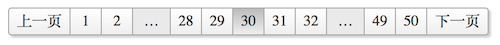

介绍 2 个效果不错、使用简单的 jQuery 分页插件
jqPagination
simplePagination

主页为 http://beneverard.github.io/jqPagination
jqPagination is a jQuery plugin that provides a newer method of pagination for your web site or application. Instead of displaying a list of page numbers like traditional pagination methods jqPagination uses an interactive ‘Page 1 of 5’ input that, when selected, allows the user to enter their desired page number. The plugin will ensure that only valid pages can be selected, a valid request will result in the paged callback. First, previous, next and last buttons work out of the box, but are optional.
1 2 3 4 5 6 7 8 9 10 11 12 13 14 15 16 17 18 19 20 21 22 23 24 25 26 27 28 29 30 31 32 33 34 35 36 <!DOCTYPE html > <html > <head > <meta charset ="utf-8" > <title > jqPagination</title > <link rel ="stylesheet" href ="jqpagination.css" > </head > <body > <center > <div class ="gigantic pagination" > <a href ="#" class ="first" data-action ="first" > « </a > <a href ="#" class ="previous" data-action ="previous" > ‹ </a > <input type ="text" readonly ="readonly" /> <a href ="#" class ="next" data-action ="next" > › </a > <a href ="#" class ="last" data-action ="last" > » </a > </div > </center > <script src ="http://cdn.bootcss.com/jquery/1.9.1/jquery.min.js" > </script > <script src ="jquery.jqpagination.js" > </script > <script > $('.pagination' ).jqPagination({ max_page : 30 , page_string : '{max_page} 页之 {current_page}' , paged : function (page ) alert(page); } }); </script > </body > </html >
设置总页数为 100: $(‘.pagination’).jqPagination(‘option’, ‘max_page’, 100);
设置当前页为第 5 页: $(‘.pagination’).jqPagination(‘option’, ‘current_page’, 5);
这 2 个设置都会触发 paged() 回调函数
主页为 http://flaviusmatis.github.io/simplePagination.js/
A simple jQuery pagination plugin, 3 CSS themes and Bootstrap support.
1 2 3 4 5 6 7 8 9 10 11 12 13 14 15 16 17 18 19 20 21 22 23 24 25 26 27 28 29 30 31 32 33 34 35 36 37 <!DOCTYPE html > <html > <head > <meta charset ="utf-8" > <title > simplePagination</title > <link rel ="stylesheet" href ="simplePagination.css" > <style media ="screen" > a { text-decoration : none; } </style > </head > <body > <center > <div id ="paginator" style ="display: inline-block;" > </div > </center > <script src ="http://cdn.bootcss.com/jquery/1.9.1/jquery.min.js" > </script > <script src ="jquery.simplePagination.js" > </script > <script > $('#paginator' ).pagination({ pages : 50 , currentPage : 30 , prevText : '上一页' , nextText : '下一页' , cssStyle : 'compact-theme' , onPageClick : function (page ) alert(page); } }); </script > </body > </html >
设置总页数为 100: $(‘#paginator’).pagination(‘updateItems’, 100);
设置当前页为第 5 页: $(‘#paginator’).pagination(‘drawPage’, 5);
这 2 个设置都不会触发 onPageClick() 回调函数